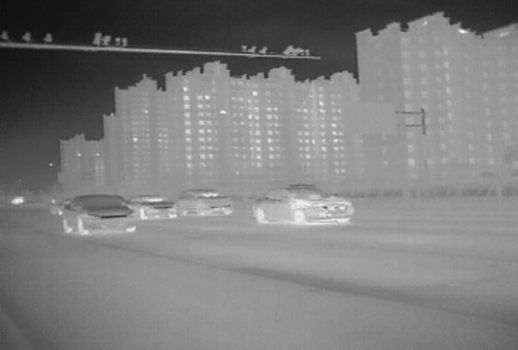
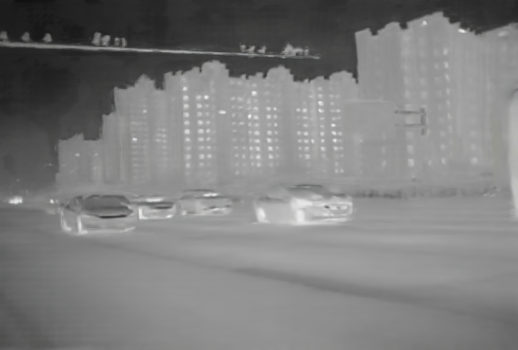
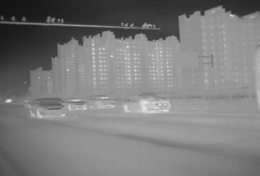

Dynamic Point Cloud
Synchronized thermal sequence and interactive 3D point-cloud preview from Dynamic_LTR.
Drag to orbit · Scroll or pinch to zoom · Double-click canvas or press R / 0 to reset · Arrow keys and +/- supported.
Failed to load the thermal sequence. Reload the page or verify local media files.
Abstract
- Monocular Thermal 4D
- Dynamic Motion Masks
- Spatiotemporal Geometry
Reconstructing dynamic 3D scenes from monocular long-wave infrared (LWIR) video presents coupled geometric and radiometric challenges: low spatial texture suppresses reliable correspondence matching, thermal diffusion blurs object boundaries across time, and moving targets violate multi-view static triangulation assumptions. To address these limitations, we decompose monocular thermal sequences into persistent static scene structure and motion-gated dynamic regions, anchoring spatiotemporal primitives with physically consistent thermal radiance constraints. Evaluated on Dynamic_LTR sequences, this representation aims to preserve crisp structural silhouettes while enabling faithful novel-view synthesis and temporal interpolation across complex moving traffic scenes.
Method Overview
Conceptual overview of thermal decoupling, spatiotemporal representation, and consistent 4D rendering.
Temporal Thermal Decomposition
Identifies dynamic motion masks across contiguous frames so static background structures remain anchored while moving emitters are isolated.
Decoupled Spatiotemporal 3D
Pairs a canonical structural scaffold with time-varying deformation trajectories to handle non-rigid motion under monocular parallax limits.
Physically Regularized Synthesis
Maintains thermal radiance continuity across interpolated timestamps to minimize ghosting and background smear.
2D Qualitative Comparison
Dynamic_LTR (scene17) interpolated timestamps. Ground Truth is labeled Reference; DGGT and PhysIR remain Baseline methods.



Drag the divider horizontally across the frame, touch-scrub, or focus the handle and press Left/Right arrow keys while playback loops.
Failed to load comparison frames. Reload the page or verify assets/compare/.
Quantitative Results
Benchmark structure on Dynamic_LTR (scene17). Numeric results are withheld pending final evaluation.
| Method | Role | PSNR (↑) | SSIM (↑) | LPIPS (↓) | tLPIPS (↓) |
|---|---|---|---|---|---|
| PhysIR (Default TI) | Baseline | – | – | – | – |
| DGGT + RIFE | Baseline | – | – | – | – |
| DGGT + TAPIP3D | Baseline | – | – | – | – |
| Ours (Pending) | Ours · Pending | – | – | – | – |
Note: All metric cells display “–” as placeholders pending final benchmark evaluation on Dynamic_LTR; no quantitative numbers are fabricated or interpolated.
Dynamic Motion Masks
Three synchronized temporal segments from scene17 showing existing motion annotations excluding ignore masks (the final segment pads frame 19 to match duration).
Failed to load dynamic motion mask videos. Reload the page or verify local media files.
BibTeX
Draft citation entry; update fields once preprint and archival details are published.
@misc{buaa_ir4d_2026,
title = {Physically Consistent Dynamic 3D Scene Reconstruction from Monocular Infrared Sequences},
author = {Author One and Author Two and Author Three},
year = {2026},
note = {Preprint under preparation, Beihang University}
}